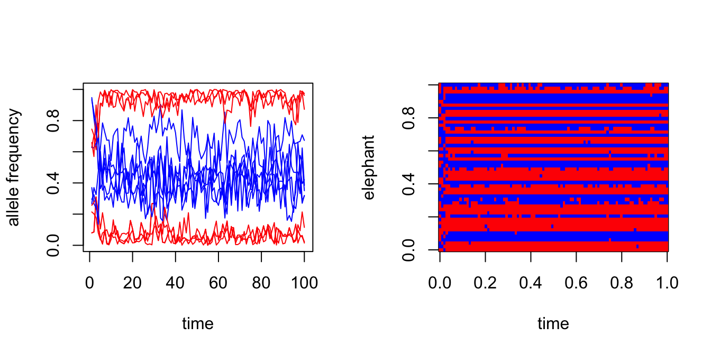

Last updated: 2026-02-09
Checks: 7 0
Knit directory: fiveMinuteStats/analysis/
This reproducible R Markdown analysis was created with workflowr (version 1.7.1). The Checks tab describes the reproducibility checks that were applied when the results were created. The Past versions tab lists the development history.
Great! Since the R Markdown file has been committed to the Git repository, you know the exact version of the code that produced these results.
Great job! The global environment was empty. Objects defined in the global environment can affect the analysis in your R Markdown file in unknown ways. For reproduciblity it’s best to always run the code in an empty environment.
The command set.seed(12345) was run prior to running the
code in the R Markdown file. Setting a seed ensures that any results
that rely on randomness, e.g. subsampling or permutations, are
reproducible.
Great job! Recording the operating system, R version, and package versions is critical for reproducibility.
Nice! There were no cached chunks for this analysis, so you can be confident that you successfully produced the results during this run.
Great job! Using relative paths to the files within your workflowr project makes it easier to run your code on other machines.
Great! You are using Git for version control. Tracking code development and connecting the code version to the results is critical for reproducibility.
The results in this page were generated with repository version b4158aa. See the Past versions tab to see a history of the changes made to the R Markdown and HTML files.
Note that you need to be careful to ensure that all relevant files for
the analysis have been committed to Git prior to generating the results
(you can use wflow_publish or
wflow_git_commit). workflowr only checks the R Markdown
file, but you know if there are other scripts or data files that it
depends on. Below is the status of the Git repository when the results
were generated:
Ignored files:
Ignored: analysis/bernoulli_poisson_process_cache/
Note that any generated files, e.g. HTML, png, CSS, etc., are not included in this status report because it is ok for generated content to have uncommitted changes.
These are the previous versions of the repository in which changes were
made to the R Markdown
(analysis/gibbs_structure_simple.Rmd) and HTML
(docs/gibbs_structure_simple.html) files. If you’ve
configured a remote Git repository (see ?wflow_git_remote),
click on the hyperlinks in the table below to view the files as they
were in that past version.
| File | Version | Author | Date | Message |
|---|---|---|---|---|
| Rmd | b4158aa | Peter Carbonetto | 2026-02-09 | Updated code in gibbs_structure_simple vignette. |
| Rmd | 0a3811c | Peter Carbonetto | 2026-02-09 | Added derivation for F | z, X to gibbs_structure_simple.Rmd. |
| Rmd | d9ca0f3 | Peter Carbonetto | 2026-02-09 | Yet more improvements to gibbs_structure_simple. |
| Rmd | c726ca7 | Peter Carbonetto | 2026-02-09 | Derived full conditional for z in gibbs_structure_simple vignette. |
| Rmd | 7f1ce97 | Peter Carbonetto | 2026-02-09 | More improvements to the gibbs_structure_simple vignette. |
| Rmd | 5fee378 | Peter Carbonetto | 2026-02-09 | A few more updates to the notation in gibbs_structure_simple.Rmd. |
| Rmd | 9bd8607 | Peter Carbonetto | 2026-02-09 | Updated some of notation in gibbs_structure_simple.Rmd |
| Rmd | 64191f0 | Peter Carbonetto | 2026-01-28 | Fixed a comment in the gibbs_structure_simple code. |
| html | 0d912ff | Peter Carbonetto | 2026-01-24 | Ran wflow_publish("analysis/gibbs_structure_simple.Rmd"). |
| Rmd | 828954a | Peter Carbonetto | 2026-01-24 | wflow_publish("analysis/gibbs_structure_simple.Rmd") |
| Rmd | 5db660c | Peter Carbonetto | 2026-01-24 | Further updates to the gibbs_structure_simple vignette. |
| Rmd | 8973452 | Peter Carbonetto | 2026-01-24 | Yet more updates to the gibbs_structure_simple vignette. |
| Rmd | db927df | Peter Carbonetto | 2026-01-24 | Fixed a couple links. |
| Rmd | 8bded2d | Peter Carbonetto | 2026-01-24 | More updates to the gibbs_structure_simple vignette. |
| Rmd | 5314608 | Peter Carbonetto | 2026-01-23 | Updates to the gibbs_structure_simple vignette. |
| html | 5f62ee6 | Matthew Stephens | 2019-03-31 | Build site. |
| Rmd | 0cd28bd | Matthew Stephens | 2019-03-31 | workflowr::wflow_publish(all = TRUE) |
| html | fbb6c48 | stephens999 | 2018-05-02 | Build site. |
| Rmd | 8183f19 | stephens999 | 2018-05-02 | workflowr::wflow_publish("analysis/gibbs_structure_simple.Rmd") |
See here for a PDF version of this vignette.
Be familiar with Bayesian inference for the two class problem and conjugate Bayesian analysis for a binomial proportion.
Suppose we observe genetic data on a sample of \(n\) elephants at \(J\) genetic markers (or “loci”) in the genome. For simplicity, we will assume the elephants are haploid; that is, they have just one copy of their genome. And we will assume that there are just two genetic types (“alleles”) at each locus, which we will label as 0 and 1.
We will further assume that there are two type of elephant: forest elephants and savanna elephants, and that the allele frequencies in forest elephants are different from those in savanna elephants, but that the allele frequencies for each of these two groups are unknown. Also, we do not know which samples are forest elephants and which are savanna elehants. Our goal is to infer both these sets of unknowns: (i) which elephants are forest and which are savanna; (ii) what are the allele frequencies in each group of elephants.
Let \(x_i\) denote the genetic data for individual \(i\) (\(i = 1,\dots, n\)). Thus, \(x_i\) is a binary vector (a vector of zeros and ones) of length \(J\). Let \(X\) denote the combined genetic data, a \(n \times J\) matrix.
Let \(z_i \in \{1, 2\}\) denote the group (forest vs. savanna) of individual \(i\), and let \(z\) denote the vector \(z = (z_1, \dots, z_n)\).
Let \(f_{jk}\) denote the frequency of the 1 allele at locus \(j\) in group \(k\) (\(j = 1, \dots, J\), \(k = 1, 2\)). (Here, 1 = forest and 2 = savanna.) Let \(f_k\) denote the vector \((f_{1k}, \dots, f_{Jk})\), and let \(F\) denote all the (unknown) allele frequencies \(F = (f_1, f_2)\). (So \(F\) is a \(J \times 2\) matrix.)
With this notation in place, we can state the problem, which is to infer the unknowns \(F\) and \(z\) from the genetic data \(X\).
To perform Bayesian inference for \(z\) and \(F\), we need to specify the likelihood, \(p(X \mid z, F)\), and a prior distribution, \(p(z, F)\).
For each individual, we will assume that if we knew its group of origin, and we knew the allele frequencies in each group, then the genetic data at the different markers are independent draws from the relevant allele frequencies. This is exactly the model assumed here. In mathematical notation, we assume \[ p(x_i \mid z_i, F) = p(x_i \mid z_i, f_{j1}, f_{j2}) = \prod_{j=1}^J f_{j{z_i}}^{x_{ij}}(1 - f_{j{z_i}})^{1 - x_{ij}}. \] All the subscripts here make this difficult to read. To make things easier to read, we can replace \(z_i\) with \(k\): \[ p(x_i \mid z_i = k, F) = p(x_i \mid z_i, f_{j1}, f_{j2}) = \prod_{j=1}^J f_{jk}^{x_{ij}}(1 - f_{jk})^{1 - x_{ij}}. \]
We will further assume that the different individuals (elephants) are independent: \[ p(X \mid z, F) = \prod_{i=1}^n p(x_i \mid z_i, F). \]
This completes specification of the likelihood.
We will assume that \(F\) and \(z\) are a priori independent, so \(p(F, z) = p(F) \, p(z)\). This assumption seems reasonable: before seeing the genetic data (\(X\)), telling you the allele frequencies in the two groups would not tell you anything about the group membership of the elephants. (Of course, after seeing the genetic data \(X\), the allele frequencies would help classify the individuals, so \(F\) and \(z\) are not going to be a posteriori independent. However, here we are concerned with the prior, not the posterior.)
For the prior on \(F\), we will further assume that the allele frequencies in each group at each locus are independent, so \[ p(F) = \prod_{k=1}^2 \prod_{j=1}^J p(f_{jk}). \] This assumption could be improved, but at the cost of considerable extra complexity, and so we stick with independence for now. Also, for simplicity we will assume a uniform prior distribution for \(f_{jk}\), so \(p(f_{jk}) = 1\).
For \(z\), we will assume that the origin of each individual is independent, and that the probability of arising from group \(k\) is \(q_k\). So \[ p(z) = \prod_{i=1}^n p(z_i), \] and \(p(z_i = k) = q_k\), in which \(q_1\), \(q_2\) are taken to be known (that is, we will not estimate them from the data). Again, this assumption could be improved, but we start here for simplicity.
Our goal is to compute (or sample from) the posterior distribution \(p(z, F \mid X)\), which by Bayes Theorem is \[ p(z, F \mid X) \propto p(X \mid z, F) \, p(z, F). \]
One way to sample from this distribution is to implement a Gibbs sampler for \(z, F\). This requires us to be able to do two things:
Sample from \(p(z \mid F, X)\).
Sample from \(p(F \mid z, X)\).
These are called the “full conditional distributions”, or “full conditions”, for \(z\) and \(F\), respectively. The use of the word “full” here indicates that they are conditional on everything else (the data and all the other parameters).
Because of the conditional independence assumptions we made above, the Gibbs sampler we just described also can be described in the following way:
For \(i = 1, \ldots, n\), sample from \(p(z_i \mid F, X)\).
For \(j = 1, \ldots, J\) and \(k = 1, 2\), sample from \(p(f_{jk} \mid z, X)\).
This algorithm is equivalent to the algorithm above.
In other words, because of the conditional independence assumptions we made, it turns out that sampling \(z\) given \((F, X)\) is the same as sampling the group \(z_i\) for a single elephant, one at a time. Similarly, because of the conditional independence assumptions we made, it turns out that sampling \(F\) given \((z, X)\) is the same as sampling an allele frequency \(f_{jk}\) for a single locus and a single group one at a time. This makes the Gibbs sampler particularly easy to implement.
We will verify these two statements next.
From the modeling assumptions made above, we know that \[ \begin{aligned} p(z \mid F, X) &\propto p(X \mid z, F) \, p(z) \, p(F) \\ &= \prod_{i=1}^n \{ p(x_i \mid z_i, F) \, p(z_i) \} \, p(F). \end{aligned} \]
So we see that the full conditional for \(z = (z_1, \dots, z_n)\) factorizes over \(i\) into terms that depend only on \(z_i\) and not the other elements of \(z\); that is, \[ p(z \mid F, X) \propto \prod_{i=1}^n \phi_i(z_i), \] in which the functions \(\phi_i(z_i)\) are \[ \phi_i(z_i) = p(x_i \mid z_i, F) \, p(z_i). \]
This implies that the \(z_i\) are conditionally independent given \(X, F\), which is very convenient as it means we can compute their conditional distribution just by computing the marginals: \[ p(z_i = k \mid F, X) \propto p(x_i \mid z_i = k, F) \, p(z_i = k). \] The exact expression for \(p(z_i = k \mid F, X)\) is derived below.
From the modeling assumptions made above, we know that \[ p(F \mid z, X) \propto p(X \mid z, F) \, p(F) \, p(z) = p(z) \, \prod_{j=1}^J \prod_{k=1}^2 p(f_{jk}) \times \big\{ {\textstyle \prod_{i=1}^n p(x_{ij} \mid z_i, f_{j1}, f_{j2})} \big\}. \] So we see that the full conditional for \(F\) factorizes over \(j\) and \(k\) into terms that depend only on \(f_{jk}\) and not any of the other allele frequencies. In other words, \[ p(F \mid z, X) \propto \prod_{j=1}^J \prod_{k=1}^2 \psi_{jk}(f_{jk}), \] in which the functions \(\psi_{jk}(f_{jk})\) are \[ \psi_{jk}(f_{jk}) = p(f_{jk}) \prod_{i=1}^n p(x_{ij} \mid z_i, f_{j1}, f_{j2}). \] The exact expression for \(p(f_{jk} \mid z, X)\) is derived below.
To illustrate, let’s simulate data from this model:
set.seed(33)
# Simulate n samples from the "simple haploid" model.
r_simplemix <- function (n, F, q1) {
J <- nrow(F)
z <- sample(2,prob = c(q1,1-q1),size = n,replace = TRUE)
X <- matrix(0,n,J)
for (i in 1:n) {
k <- z[i]
X[i,] <- rbinom(J,rep(1,J),F[,k])
}
rownames(X) <- paste0("i",1:n)
colnames(X) <- paste0("j",1:J)
names(z) <- paste0("i",1:n)
return(list(X = X,z = z))
}
# Simulate a data set with n = 50 elephants and J = 6 genetic markers.
q1 <- 0.5
F_true <- cbind(c(0.500,0.500,0.500,0.500,0.500,0.500),
c(0.001,0.999,0.001,0.999,0.001,0.999))
rownames(F_true) <- paste0("j",1:6)
colnames(F_true) <- c("k1","k2")
sim <- r_simplemix(50,F_true,q1)
X <- sim$X
z_true <- sim$zThis function implements the main loop:
# Inputs are: X, an n x J binary matrix of n alleles at J loci; q1,
# the prior probability of z = 1; and T, the length of the Markov
# chain to simulate. The output is the T states of the Markov chain.
run_gibbs_sampler <- function (X, q1, T = 100) {
n <- nrow(X)
J <- ncol(X)
states <- list(z = matrix(0,n,T),
F = array(0,c(J,2,T)))
z <- sample(2,n,replace = TRUE)
for (t in 1:T) {
F <- sample_F_given_z(X,z)
z <- sample_z_given_F(X,F,q1)
states$z[,t] <- z
states$F[,,t] <- F
}
return(states)
}This is the function for sampling \(F\) given \(z, X\):
# Draws the allele frequencies F randomly from the posterior
# distribution p(F | X, z). The output is a J x 2 matrix, where J is
# the number of markers.
sample_F_given_z <- function (X, z) {
J <- ncol(X)
F <- matrix(0,J,2)
for (k in 1:2) {
i <- which(z == k)
n <- length(i)
if (n == 0)
n1 <- 0
else
n1 <- colSums(X[i,])
n0 <- n - n1
F[,k] <- rbeta(J,n1 + 1,n0 + 1)
}
return(F)
}This is the function for sampling \(z\) given \(F, X\):
# Draws the elephant group assignments z randomly from the posterior
# distribution p(z | X, F). The output is a vector of length n, where
# n is the number of elephants.
sample_z_given_F <- function (X, F, q1) {
n <- nrow(X)
z <- rep(0,n)
for (i in 1:n) {
logw <- compute_loglik_times_prior_z_given_F(X[i,],F,q1)
a <- max(logw)
post <- exp(logw - a)
post <- normalize(post)
z[i] <- sample(2,1,prob = post)
}
return(z)
}
# This function is used in sample_z_given_F.
normalize <- function (x)
x/sum(x)
# Another function used in sample_z_given_F.
compute_loglik_times_prior_z_given_F <- function (x, F, q1) {
f1 <- F[,1]
f2 <- F[,2]
q2 <- 1 - q1
return(c(log(q1) + sum((1-x)*log(1-f1)) + sum(x*log(f1)),
log(q2) + sum((1-x)*log(1-f2)) + sum(x*log(f2))))
}Try the Gibbs sampler on the data simulated above:
q1 <- 0.5
T <- 100
states <- run_gibbs_sampler(X,q1,T)Plot the state of the Markov chain over time:
par(mfrow = c(1,2))
J <- ncol(X)
plot(1:T,states$F[1,1,],col = "red",type = "l",xlab = "time",
ylab = "allele frequency",ylim = c(0,1))
for (j in 1:J) {
lines(1:T,states$F[j,1,],col = "red")
lines(1:T,states$F[j,2,],col = "blue")
}
image(t(states$z),col = c("red","blue"),xlab = "time",ylab = "elephant")
Compare the true groupings to the posterior mean of \(z\):
head(cbind(true = z_true,est = rowMeans(states$z)),n = 8)
# true est
# i1 2 1.01
# i2 2 1.03
# i3 2 1.03
# i4 1 1.98
# i5 1 1.98
# i6 1 1.96
# i7 2 1.02
# i8 2 1.03Compare the true allele frequencies to the posterior mean of \(F\).
cbind(true = F_true[,1],est = rowMeans(states$F[,1,]))
# true est
# j1 0.5 0.06798217
# j2 0.5 0.94418090
# j3 0.5 0.07689037
# j4 0.5 0.91541484
# j5 0.5 0.06153185
# j6 0.5 0.94577366
cbind(true = F_true[,2],est = rowMeans(states$F[,2,]))
# true est
# j1 0.001 0.4378161
# j2 0.999 0.4638687
# j3 0.001 0.6680624
# j4 0.999 0.3569845
# j5 0.001 0.3802636
# j6 0.999 0.4621341The estimates look wrong, but actually this is an example of the label switching problem. Switching the labels—that is, replacing \(k = 1\) with 2 and replacing \(k = 2\) with 1—should fix the problem and make the estimates align better to the true values:
z_switch <- 2 - states$z
head(cbind(true = z_true,est = rowMeans(z_switch)),n = 8)
# true est
# i1 2 0.99
# i2 2 0.97
# i3 2 0.97
# i4 1 0.02
# i5 1 0.02
# i6 1 0.04
# i7 2 0.98
# i8 2 0.97
cbind(true = F_true[,1],est = rowMeans(states$F[,2,]))
# true est
# j1 0.5 0.4378161
# j2 0.5 0.4638687
# j3 0.5 0.6680624
# j4 0.5 0.3569845
# j5 0.5 0.3802636
# j6 0.5 0.4621341
cbind(true = F_true[,2],est = rowMeans(states$F[,1,]))
# true est
# j1 0.001 0.06798217
# j2 0.999 0.94418090
# j3 0.001 0.07689037
# j4 0.999 0.91541484
# j5 0.001 0.06153185
# j6 0.999 0.94577366Given that the full conditional for \(z\) factorizes over the individual elephants \(i\), without loss of generality we can derive the full conditional assuming a data set with a single elephant. Dropping the unneeded the \(i\) subscripts, this is \[ p(z = k \mid F, x) \propto p(x \mid z = k, F) \, p(z = k). \] Plugging in the expression for the likelihood and prior above, this is \[ p(z = k \mid F, x) \propto q_k \times \prod_{j=1}^J f_{jk}^{x_j}(1-f_{jk})^{1-x_j}. \] Note that an additional normalization step is needed to actually obtain probabilities.
Given that the full conditional for \(F\) factorizes over the individual loci \(j\), without loss of generality we can derive the full conditional assumine a data set with a single locus or marker, so \(F\) is just two allele frequencies, \(f_1\) and \(f_2\). We further found out that we can focus on a single \(k\) since the full conditional also factorized over \(k\). Dropping the unneeded \(j\) subscripts, this is \[ p(f_k \mid z, x) \propto p(f_k) \prod_{i=1}^n p(x_i \mid z_i, f). \] Since we assumed a uniform prior, this simplifies to \[ p(f_k \mid z, x) \propto \prod_{i=1}^n p(x_i \mid z_i, f). \]
Next, a useful observation is that \(p(x_i \mid z_i, f)\) only involves \(f_k\) if \(z_i = k\). So we only need to actually consider the likelihood terms for which the elephant \(i\) is assigned to group \(k\). Denoting \(n_{0k}\) as the number of elephants in group \(k\) with the 0 allele, and denoting \(n_{1k}\) as the number of elephants in group \(k\) with the 1 allele, this can be written more simply as \[ p(f_k \mid z, x) \propto f_k^{n_{1k}} (1 - f_k)^{n_{0k}}. \] Recall, from our previous derivations, this means that \[ f_k \mid z, x \sim \mathrm{Beta}(n_{1k} + 1, n_{0k} + 1). \]
sessionInfo()
# R version 4.3.3 (2024-02-29)
# Platform: aarch64-apple-darwin20 (64-bit)
# Running under: macOS 15.7.1
#
# Matrix products: default
# BLAS: /Library/Frameworks/R.framework/Versions/4.3-arm64/Resources/lib/libRblas.0.dylib
# LAPACK: /Library/Frameworks/R.framework/Versions/4.3-arm64/Resources/lib/libRlapack.dylib; LAPACK version 3.11.0
#
# locale:
# [1] en_US.UTF-8/en_US.UTF-8/en_US.UTF-8/C/en_US.UTF-8/en_US.UTF-8
#
# time zone: America/Chicago
# tzcode source: internal
#
# attached base packages:
# [1] stats graphics grDevices utils datasets methods base
#
# loaded via a namespace (and not attached):
# [1] vctrs_0.6.5 cli_3.6.5 knitr_1.50 rlang_1.1.6
# [5] xfun_0.52 stringi_1.8.7 promises_1.3.3 jsonlite_2.0.0
# [9] workflowr_1.7.1 glue_1.8.0 rprojroot_2.0.4 git2r_0.33.0
# [13] htmltools_0.5.8.1 httpuv_1.6.14 sass_0.4.10 rmarkdown_2.29
# [17] evaluate_1.0.4 jquerylib_0.1.4 tibble_3.3.0 fastmap_1.2.0
# [21] yaml_2.3.10 lifecycle_1.0.4 whisker_0.4.1 stringr_1.5.1
# [25] compiler_4.3.3 fs_1.6.6 Rcpp_1.1.0 pkgconfig_2.0.3
# [29] later_1.4.2 digest_0.6.37 R6_2.6.1 pillar_1.11.0
# [33] magrittr_2.0.3 bslib_0.9.0 tools_4.3.3 cachem_1.1.0